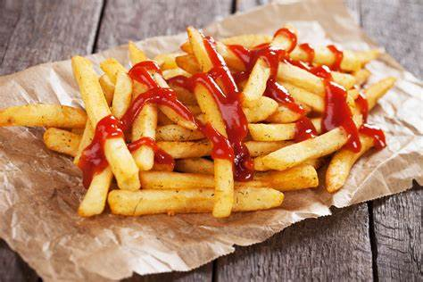

10 Estados de la República.
- Aguascalientes
- Pabellón de Arteaga
- Asientos
- Rincón de Romos
- Baja California
- Tijuana
- Mexicali
- Ensenada
- Campeche
- San Francisco de Campeche
- Ciudad del Carmen
- Champotón
- Chiapas
- Tuxtla Gutiérrez
- San Cristóbal de las Casas
- Palenque
- Chihuahua
- Coahuila de Zaragoza
- Estado de México
- Chalco
- Valle de Chalco
- Ixtapaluca
- Guanajuato
- Acámbaro
- Apaseo el Alto
- Atarjea
- Guerrero
- Acapulco de Juárez
- Ahuacuotzingo
- Ajuchitlán del Progreso
Receta de papas a la francesa.
Ingredientes:
- 5 papas grandes
- Aceite para freir
- Sal
Preparación.
- Corta las cinco papas en tiras. Aunque se acostumbra dejarlas delgadas (de aproximadamente 1 centímetro), no importa si las tiras son un tanto gruesas.
- Calienta una olla con aceite para freír a fuego alto. Recuerda no llenar la olla hasta el tope, pues podrías sufrir accidentes cuando el aceite se caliente y añadas las papas. Una buena recomendación es usar una olla profunda.
- Una vez que el aceite esté caliente, sumerge una porción de las tiras en la olla. Manténlas allí hasta que las papas del lote estén doradas y crujientes. Este paso te llevará entre 2 y 4 minutos.
- Saca las papas de la olla y colócalas sobre papel de cocina.
- Repite los últimos dos pasos hasta que todas las papas cortadas estén fritas.
- Antes de servir las papas, espolvorea sal de acuerdo a tus preferencias.
- Sirve mientras las papas estén calientes y crujientes.
- ¡Disfruta!

5 Carreras profesionales.
Economía
- Teoría
- Matemáticas
- Taller
- Finanzas
- Literatura
Medicina
- Biología
- Salud
- Practicas
- Teoría
- Literatura
Antropología
- Teoría
- Historia
- Biología
- Ingles
- Literatura
Diseño grafíco
- Arte
- Dibujo
- Teoría
- Finanzas
- Literatura
Arquitectura
- Diseño
- Matemáticas
- Arte
- Dibujo
- Literatura